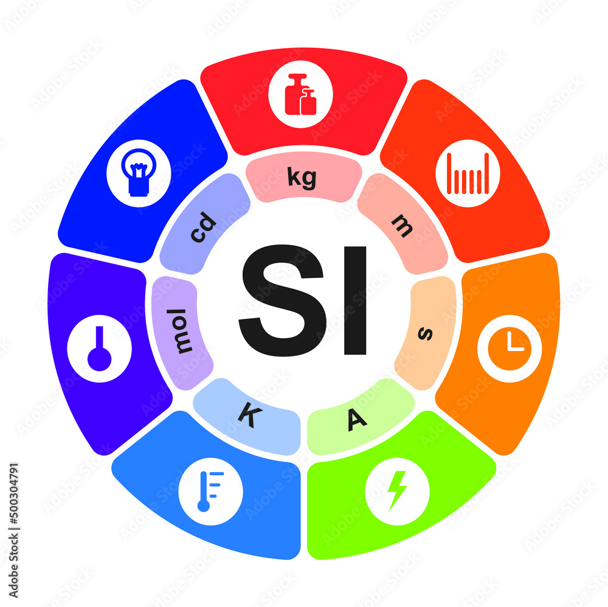
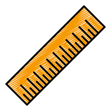
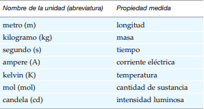
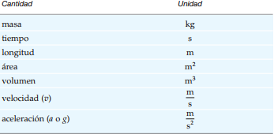

Por qué y cómo medimos
Medir es importante para todos nosotros. Es una de las formas concretas en que enfrentamos el mundo. Este concepto resulta crucial en física. La física se ocupa de describir y entender la naturaleza, y la medición es una de sus herramientas fundamentales. Hay formas de describir el mundo físico que no implican medir.
Por ejemplo, podríamos hablar del color de una flor o un vestido. Sin embargo, la percepción del color es subjetiva: puede variar de una persona a otra. De hecho, muchas personas padecen daltonismo y no pueden distinguir ciertos colores. La luz que captamos también
puede describirse en términos de longitudes de onda y frecuencias. Diferentes longitudes de onda están asociadas con diferentes colores debido a la respuesta fisiológica de nuestros ojos ante la luz. No obstante, a diferencia de las sensaciones o percepciones del color, las longitudes de onda pueden medirse. Son las mismas para todos. En otras palabras, las mediciones son objetivas. La física intenta describir la naturaleza de forma
objetiva usando mediciones.

Unidades SI de longitud, masa y tiempo
La longitud, la masa y el tiempo son cantidades físicas fundamentales que describen muchas cantidades y fenómenos. De hecho, los temas de la mecánica (el estudio del movimiento y las fuerzas) que se cubren en la primera parte de este libro tan sólo requieren estas cantidades físicas. El sistema de unidades que los científicos usan para representar éstas y otras cantidades se basa en el sistema métrico.
Históricamente, el sistema métrico fue consecuencia de propuestas para tener un sistema más uniforme de pesos y medidas hechas, que se dieron en Francia durante los siglos XVII y XVIII. La versión moderna del sistema métrico se llama sistema internacional de unidades, que se abrevia oficialmente SI (del francés Système International des Unités). El SI incluye cantidades base y cantidades derivadas, que se describen con unidades base y unidades derivadas, respectivamente. Las unidades base, como el metro y el kilogramo, se representan con estándares. Las cantidades que se pueden expresar en términos de combinaciones de unidades base se llaman unidades derivadas.
(Pensemos en cómo solemos medir la longitud de un viaje en kilómetros; y el tiempo que toma el viaje, en horas. Para expresar la rapidez con que viajamos, usamos la
unidad derivada de kilómetros por hora, que representa distancia recorrida por unidad de tiempo, o longitud por tiempo.)
Uno de los refinamientos del SI fue la adopción de nuevas referencias estándar
para algunas unidades base, como las de longitud y tiempo.
Longitud
La longitud es la cantidad base que usamos para medir distancias o dimensiones en el espacio. Por lo general decimos que longitud es la distancia entre dos puntos.
Sin embargo, esa distancia dependerá de cómo se recorra el espacio entre los puntos, que podría ser con una trayectoria recta o curva.
La unidad SI de longitud es el metro (m). El metro se definió originalmente como 1/10 000 000 de la distancia entre el Polo Norte y el ecuador a lo largo de un meridiano que pasaba por París * Se estudió una porción de este meridiano,
entre Dunquerque, Francia y Barcelona, España, para establecer la longitud estándar, a la que se asignó el nombre metre, del vocablo griego metron, que significa “una medida”. (La ortografía española es metro.) Un metro mide 39.37 pulgadas, poco
más de una yarda.
no es conveniente tener un estándar de referencia que cambia con las condiciones externas, como la temperatura. En 1983, el metro
se redefinió en términos de un estándar más exacto, una propiedad de la luz que
no varía: la longitud del trayecto recorrido por la luz en el vacío durante un intervalo de 1/299 792 458 de segundo. En otras palabras, la luz viaja 299 792 458 metros en un segundo, y la velocidad de la luz en el vacío se define como
c 299 792 458 m/s (c es el símbolo común para la velocidad de la luz). Observe que el estándar de longitud hace referencia al tiempo, que se puede medir con gran exactitud.
Masa
La masa es la cantidad base con que describimos cantidades de materia. Cuanto mayor masa tiene un objeto, contendrá más materia.
La unidad de masa en el SI es el kilogramo (kg), el cual se definió originalmente en términos de un volumen específico de agua;
puedes obtener mas informacion hacerca de la Masa mas abajo
Tiempo
El tiempo es un concepto difícil de definir. Una definición común es que el tiempo es el flujo continuo de sucesos hacia adelante. Este enunciado no es tanto una definición
sino una observación de que nunca se ha sabido que el tiempo vaya hacia atrás, como sucedería cuando vemos una película en que el proyector funciona en reversa.
A veces se dice que el tiempo es una cuarta dimensión que acompaña a las tres dimensiones del espacio (x, y, z, t), de tal manera que si algo existe en el espacio,
también existe en el tiempo. En cualquier caso, podemos usar sucesos para tomar mediciones del tiempo.
La unidad SI del tiempo es el segundo (s). Originalmente se usó el “reloj” solar para definir el segundo. Un día solar es el intervalo de tiempo que transcurre
entre dos cruces sucesivos de la misma línea de longitud (meridiano) efectuados por el Sol. Se fijó un segundo como 1/86 400 de este día solar aparente (1 día 24 h
1440 min 86 400 s).
Unidades base del SI
El SI tiene siete unidades base para siete cantidades base, las cuales se supone queson mutuamente independientes. Además del metro, el kilogramo y el segundo para 1. longitud, 2. masa y 3. tiempo, las unidades SI incluyen 4. corriente eléctrica (carga/segundo) en amperes (A), 5. temperatura en kelvin (K), 6. cantidad de sustancia en moles (mol) y 7. intensidad luminosa en candelas (cd).
Se cree que las cantidades mencionadas constituyen el número mínimo de cantidades base necesarias para describir cabalmente todo lo que se observa o mide en la naturaleza.

Las cantidades fundamentales, o base, empleadas en las descripciones físicas se llaman dimensiones. Por ejemplo, la longitud, la masa y el tiempo son dimensiones. Podríamos
medir la distancia entre dos puntos y expresarla en unidades de metros, centímetros o pies; pero la cantidad tendría la dimensión de longitud en los tres casos.
Las dimensiones brindan un procedimiento mediante el cual es posible verificar la consistencia de las ecuaciones. En la práctica, resulta conveniente utilizar unidades específicas, como m, s y kg. Tales unidades pueden considerarse cantidades algebraicas y cancelarse. El empleo de unidades para verificar ecuaciones
se llama análisis unitario, y muestra la consistencia de las unidades y si una ecuación es dimensionalmente correcta.
